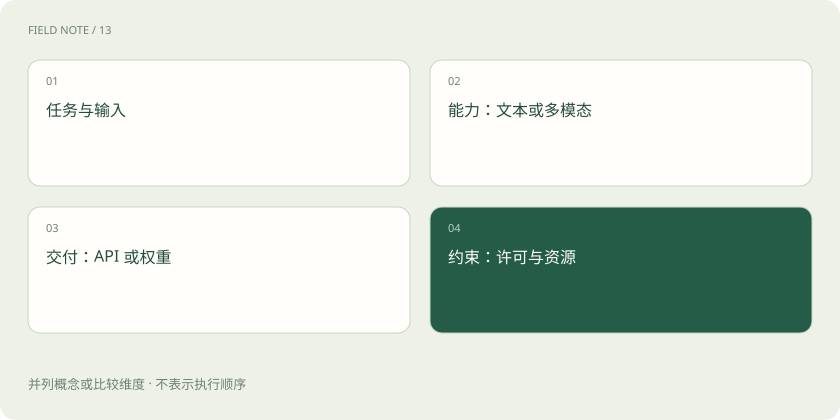

先读哪些知识
先用一个类比理解
买车时，动力类型、座位数、品牌和是否能自己维修，是不同问题。模型的“多模态”“推理”“开放权重”也不是互斥选项。
类比只帮助建立直觉，不等同于技术的完整机制。
一图看懂

多模态看输入和输出
有些模型理解图片却只输出文本，有些能生成图像或音频。还要看输入分辨率、音频时长、视频采样和上下文限制。不能从“支持图片”推出“能精确读懂任何扫描表格”。
推理能力和推理服务不是同一用法
“推理模型”通常强调复杂任务中的思考与解题能力；“模型推理服务”泛指运行模型处理请求。前者是能力与训练侧的描述，后者是服务阶段，普通文本模型也需要推理服务。
开放权重不等于没有约束
可以下载权重不意味着训练数据公开，也不意味着所有商用、再分发都无限制。部署前看具体模型卡与许可证；通过 API 使用模型，则看接口能力、数据政策与服务条件。
放进真实场景
SCENARIO
处理报销单需要的是图片理解、字段提取与证据核验。会写长篇推理过程，不代表能够准确识别模糊发票。
别踩这个误区
本地部署也需要权限、审计和运维；它不自动等于安全或更便宜。
想一想
一个模型可以同时是多模态、推理模型和开放权重吗？
可以。这些标签属于不同维度。
关联阅读
资料与边界
本文为原创知识讲解。类比和图示经过简化；示例数字不代表实测或报价。整理日期：2026-11-04。文末列出对应技术的原始资料，具体功能与版本支持请以原文为准。